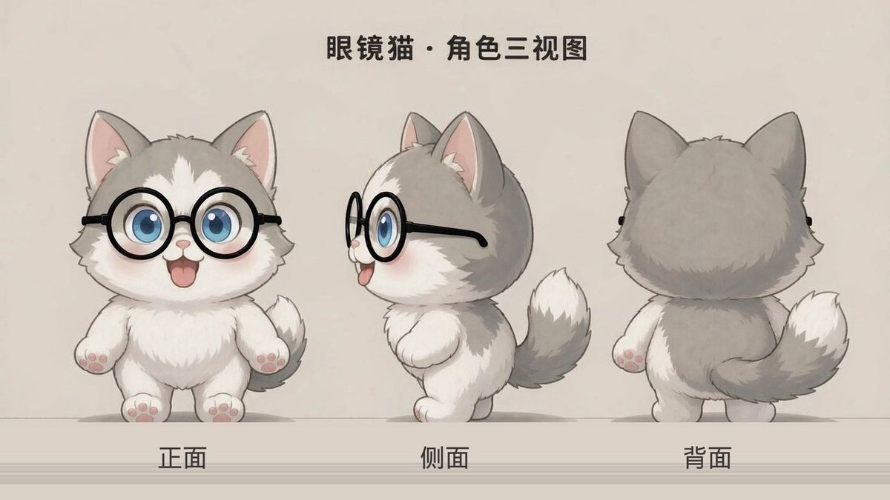

怎么玩
选曲 → 先点「示范」听一遍 → 切到「跟弹打分」→「开始」。音符落到判定线时按下对应键，判定 PERFECT / GOOD / MISS，连击越高分越多。
自适应键位 · 键位密度 · 横竖屏与方向锁定
手机横竖屏恒定 13 键（8 白 + 5 黑，C4–C5 一个八度，横屏每白键约 105px，转屏保持同一套手感与字母提示）、平板竖屏 25 键（15 白 + 10 黑，C4–C6）、平板横屏 37 键（22 白 + 15 黑，C3–C6）、电脑 61 键全键盘（C2–C7）。点右上角「键位 ⌄」可展开面板，手动指定 16 / 25 / 29 / 32 / 37 键或强制切换设备布局，设置存本机；面板里会实时显示当前白键宽度与该档位「整曲零换把位」的曲目数。
为什么不再用固定 16 键：旧平板档 C4–D#5 收在黑键上，琴键末端一根黑键不像真琴；65 首里只有 20 首能整曲零换把位，平均要换 2.78 次把位；平板竖屏每白键宽 85px、横屏 114px，远超 44~48px 触控目标，屏幕白白浪费。实测换成 25 键后 56/65 首零换把位、37 键 64/65 首；键位更宽也让窄音域曲子能整首落进单手区，两只手更不容易叠。所有档位都以白键 C 收尾，黑键自动落在两侧白键之间。
按屏幕逻辑短边识别设备，横屏不会串档；横屏会自动压缩控制栏与键盘高度。手机横屏若想换成 25 键，在「键位 ⌄」面板手动指定即可。
顶栏下方有醒目的 「📐 屏幕方向」切换条，三档直接点选：🔓 自动 / ↔ 锁定横屏 / ↕ 锁定竖屏，当前档位实心高亮，锁定时整条变金色，并在右侧实时显示「当前 横屏/竖屏 · 已锁定」。优先尝试浏览器系统级方向锁定；若浏览器不支持（如 iOS Safari），整个界面会自动旋转 90° 保持锁定方向，键位与瀑布流依旧正确。
🖐 双手键位：每首曲子换一套键位
旧做法是逐音 ±12 折叠，所有曲子都被压进同一个八度，音程被打乱、不同音还可能挤成同一个键，所有曲子都堆在同一片键位上，两只手自然叠在一起。现在改成整首曲子统一移调：永远只换八度、不换调，旋律音程 100% 保持；音域宽到一段键位装不下时，个别音只按整八度折回，音名绝不改变（不会把 E 吸成 F），所以不会出现走音。不同曲子按自身音高倾向落到不同键位。
可弹键位再切成互不重叠的左手区（青色）与右手区（金色）：桌面按 61 键中点留一个键作隔离缓冲，键盘上下两排正好对应换把位；手机 / 平板同样在中点留缓冲（键位密度变化时自动重算）。分区只用来提示该用哪只手，绝不为分手而撕开旋律；音域窄的曲子整首只占一片、另一只手完全不用碰。琴键顶部色条、瀑布流音符顶条、下方提示文字都会实时告诉你该用哪只手。
顶栏下方「🖐 双手键位」条三档：自动分区（推荐）/ 整曲居中（只移调，仍保留手别提示）/ 原样（回到旧折叠）。切换曲目、切换键位布局、按 [ ] 移八度都会自动重算。
⌨ 电脑键盘 = 真实钢琴分布
白键（下排）Z X C V B N M , . / → C3 D3 E3 F3 G3 A3 B3 C4 D4 E4；黑键（中排）S D G H J L ; 恰好落在两侧白键中间 → C# D# F# G# A# C# D#。E–F、B–C 之间本来就没有黑键，所以 F K 自然空着，跟真琴一致。
再高一个八度：白键 Q W E R T Y U I O P → C5…E6，黑键 2 3 5 6 7 9 0。
按 [ / ] 把整套键位下移 / 上移八度，就能用键盘弹到 61 键两端的 C2 与 C7；键位字母会跟着移动，右上角显示「↑8 / ↓8」。
判定用物理键位（e.code），中文输入法、CapsLock、Shift、非 QWERTY 系统布局都不跑偏；按住不放琴键持续发光、声音持续，松键才止音。点过「开始」等按钮后也能直接弹，不会吞键。
🐱 方块跳跃 · 死亡模式
工具条切到「🐱 跳跃」：这是一条等距圆角方块跑道，哈士喵真的站在方块顶面、逐块往前跳（跑酷式）。每个音符 = 一次跳跃节拍：按对金色内框预告的琴键 → 划一道抛物线稳稳落到下一块方块、连跳加分；下一块方块有金色脉冲落点提示。漏拍 = 没踩上下一块，直接踩空旋转下坠 → GAME OVER，没有裂开特效。全部音符命中则 CLEAR。
命中会有全屏光爆、冲击波环、琴键光柱、分数飘字、跳跃残影与震屏，PERFECT 判定大字带连击数，每 5 连跳额外爆发；漏拍则红色碎片爆开与剧烈震屏。默认 💀 一命（掉下来立刻结束），点 HUD 上「💀 一命」可切到 ♥♥♥ 三心 宽容练习；「⏸」暂停节拍，但哈士喵的呼吸、摆动、方块发光与星点闪烁不会定格。速度调到 60%~70% 会更好上手；通关/死亡面板记录得分、成功连跳、最远连跳与命中率，最远连跳存本机。死亡后有三种重开方式：结算面板「🐱 再跳一次」、右下角常驻的金色大按钮、或直接点画面空白处。
🐱 哈士喵按开源 2D 动画方案重做，不再「全程匀速飘」：脚掌压进方块顶面，有接地深阴影、爪印与压力环。已删除上一版被指「拉歪」的整图网格变形与非等比拉伸，改成真部件动画。核心是 anticipation → action → hold → settle 关键帧节奏（停顿本身就是表演），6 种待机小动作轮换：伸懒腰 / 原地小跳 / 歪头甩尾 / 打盹 / 左右张望 / 抬爪打招呼；另有 闭式阻尼弹簧过冲与落地回弹、分部位弹簧骨骼（头/双耳/三段尾巴/前爪/眼镜各自滞后）、6 块刚体部件骨骼（从已确认插画按像素无缝切分：头 / 尾 / 双前爪 / 身体 / 双脚，各绕关节独立旋转，双脚零变换所以永远站着）、确定性视线扫视与胡须抖动。临判定前先后撤再蹲低蓄力，命中后蹬地拉伸 → 腾空舒展 → 落地弹簧回弹，每 5 连跳转圈庆祝，三心模式漏拍会踉跄。所有动作是时间 t 的纯函数，可 seek、暂停照样持续，HUD 左下显示当前动作名。点 HUD「✨ 灵动」可切回旧版匀速摆动做 A/B 对比。
游戏成绩不计入考级熟练度与曲目最高分。
📚 参考的开源资料（只取其原理与数学，零依赖、不引 CDN，仍可离线）
· Ryan Juckett《Damped Springs》（2008/2012，自由许可）：闭式阻尼简谐振子；Harmonica(Go)、Hooke(OCaml, MIT)、Natura(Rust, MIT)、damped-springs(Rust) 均为其移植 → 本作用的阶跃/脉冲解析响应
· Disney 12 Principles / Mografy 开源实现：面积守恒 squash & stretch、anticipation、follow through / overlapping、slow in & out、secondary action、「不要给可读停顿加永动」
· OpenMontage / Ink Theater：springEase 闭式可 seek、mulberry32 种子随机、action_timeline_compiler 的三段式节奏
· Unity 2D Procedural Hyper-Motion Controller：Marionette 模式（视觉部件与物理根解耦，滞后产生 drag / overshoot）
· SpringBone / Verlet：程序化弹簧骨骼链；physics-rope(Canvas, MIT)、Tail Animator → 三段尾巴
· Godot Skeleton2D / DragonBones(Apache-2.0) / Spine / SkelForm：骨骼层级与 pivot 关节 → 6 块刚体部件绕关节旋转；双脚零变换保证站立
· worldprogramming 的 Canvas 2D 分片变形曾用于上一版，因把整张位图拉歪已移除
· 工具链对比：Rive(runtime MIT)、Lottie / dotLottie(ThorVG)、SkelForm、Animata；本作保持单文件零依赖，故自实现而非引入运行时
下面是已确认的角色三视图（正 / 侧 / 背）。

🎯 演练模式与最高分
工具条新增「🎯 演练」：跟弹但不结算、不结束、MISS 不打断连击，曲终自动循环下一遍，金色内框提前预告下一个该按的键，适合把速度调到 60%~70% 反复磨一首。演练不发放熟练度、不记最高分。
每首曲目的历史最高分直接写在曲目下拉（如「· 最高 1.2 万」），考级进度里逐首列出，结算页显示是否破纪录；最高分与熟练度一样存在本机，只有「跟弹打分」模式计入。
🎨 自定义画面
点右上角「🎨 画面」打开面板：6 套预设主题（深空蓝 / 赛博霓虹 / 暖纸手稿 / 森林墨绿 / 樱花粉紫 / 极简黑白），还能单独调主色、辅助色、白键、黑键颜色；音符支持「主题双色 / 单色 / 🌈 彩虹（按音高上色）」三种模式；可上传自己的背景图（自动等比压缩、仅存本机）并调暗化程度；另有命中粒子、音符发光、按键光晕、轨道网格四个特效开关。设置实时预览、自动保存在本机，可一键恢复默认。
🎓 考级曲目与熟练度解锁
内置 65 首公有领域曲目，Lv.1~Lv.10 每级 6 首备选（音阶、小星星、两只老虎 → 绿袖子、蓝色多瑙河、卡门、月光、土耳其进行曲、冬风、瀑布练习曲…），演奏级另有 5 首最高难度备选：《野蜂飞舞》《鬼火》《伊斯拉美》《魔鬼的颤音》《无穷动》。曲目下拉按等级分组，同级可随意换曲。跟弹结算按准确率给 ★（≥90% 三星 / ≥75% 两星 / ≥55% 一星），每首只保留最好成绩；累计熟练度逐级解锁，最高难度还需 ★56 且 Lv.10 任一首拿到三星。进度存在本机 localStorage，点右上角「Lv.1 ★0」可查看全部曲目与解锁条件。
导入歌曲
支持 .mid / .midi 标准 MIDI、.json 谱面（{title,bpm,notes:[{t,m,d,v}]}，t/d 为秒）、以及 .mp3/.wav 等音频作为伴奏同步。音频自动转谱可后续接入 Spotify Basic Pitch。
音频与反馈
Web Audio 自制混响 + 力度响应合成音色（离线可用）；联网时按需加载 Salamander 真钢采样（CC BY 3.0，懒加载 + 自动回退）。「真琴输入」为实验功能，用麦克风自相关检测音高，建议戴耳机。
键盘上的字母由 CSS 绘制，界面全局禁用了文本选择、长按菜单与原生拖拽，手指按住滑动也不会弹出「复制」或丢键；帮助文档内的文字与链接仍可正常选中复制。
可参考的开源项目
内置 65 首均为公有领域旋律的简化单旋律编配，非考级教材原谱，仅作节奏与键位练习用。采样版权归原作者，CC BY 3.0 要求保留署名。
背景图会等比压缩后存在浏览器本地，不会上传；换设备或清缓存会丢失。彩虹模式按音高自动上色，方便看音区。
结算按准确率给 ★（≥90% 三星 / ≥75% 两星 / ≥55% 一星）。每首曲目只保留最好成绩，累计熟练度逐级解锁；「演奏级 · 最高难度」需要 ★56 且 Lv.10 任一首拿到三星。